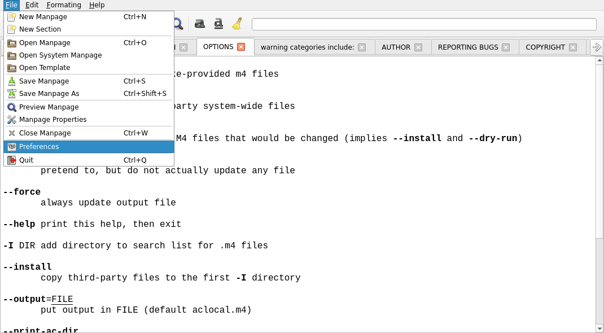

What it is and does
I write a number of my own programs, and have always had a bit of a problem writing the manpage.
This is the QT 5/6 version of my gtk 2/3 manpage editor.
Manual
File Menu
Tool Bar
Preferences
Properties
Text Formatting
ToDo
File Menu

New Manpage will create a new manpage.
New Section adds a section to the manpage.
Open opens a manpage file.
Open opens a system install manpage by name.
Preview Manpage will preview the manpage in ( at the moment ) xterm, the terminal to be used will be set in prefs.
Save/Save As/Print/Quit and Close are standard.
Toolbar

Pretty standard the entry box is a 'Live' search just start typing, press enter to go to the next match and shift+enter for the previous.
Preferences
TBD
Properties
Set the properties for the entire manpage.
Right clicking on a tab will bring up the section properties dialog allowing you to change the name of the section and/or the section type.
Upper case tab names are main sections, lower case are sub sections, The tab case is for visual looks only the actual case of the section is what is typed in the 'Name' edit.
It's usual for a main section to be all uppercase.
Text Formatting
Simple text formatting is done via the 'Formatting' menu just select a piece of text and select bold/italic or clear, italic text tends to be shown in the terminal as underlined, this can be set in the prefs.
ToDo
More help.
Prefs.
Terminal command.
Gzip pages.
Highlight line.
Wrap lines.
Spell check.
Add template(s).
Unzip page if needed.
Handle .so directive in page.